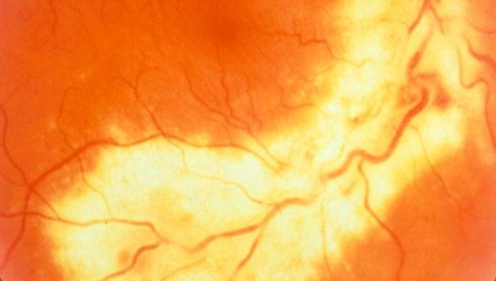
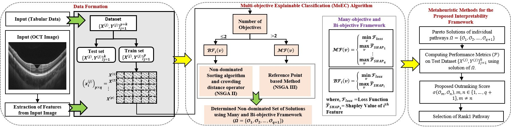

Overview
I work in commutative algebra and algebraic K-theory, with a focus on subintegrality and seminormality of ring extensions and their K-theoretic invariants — particularly the Picard group and the group of invertible submodules. My thesis extends this framework to extensions of monoid algebras, graded integral domains, and Rees-like algebras, alongside related results on projective modules and Serre dimension.
My recent research has focused on stability problems for the K2-functor of Chevalley groups associated with irreducible simply-laced root systems, establishing a connection between algebraic K-theory and modern 𝔸1-homotopy theory.
I am also interested in Brauer groups of fields, rings, and schemes, including the cohomological Brauer group, together with Azumaya algebras and division algebras. For singular schemes, I am particularly interested in the Levine–Weibel Brauer group of monoid algebras and monoid schemes.
Research Areas
Vasculature feature segmentation from the fundus images is critical for the identification of retinal diseases. However, automated vessel segmentation is challenging owing to variability in vessel structure and color gradients, low contrast between vessels, and pathologies. Hand-crafted and deep learning approaches have evolved for the vessel segmentation task, which employs annotations to train the model. These approaches ignore the vessel’s geometrical characteristics in the fundus images, leading to inaccuracies.
we propose a novel unsupervised segmentation method based on interrelationship handling, Bonferroni mean pre-aggregation operator, with the aid of dynamic fuzzy histogram equalization, namely BMPDFHESeg. The method extracts the vascular information by fusing color channels by constructing an interrelationship handling pre-aggregation operator. The operator enables finding the direction of increasingness to segment large vessels and vessel feature enhancement through a dynamic fuzzy histogram equalization process using the prior feature intensity information. The results were validated by ophthalmologists for the accuracy of the vessel segmentation and usefulness for the diagnosis of retinal disorders.

Recent studies on explainable machine learning models often analyze feature importance after training, but this results in a model that does not capture feature dependencies and requires extra computational resources for explainability. We propose a method for training a supervised learning model through multi-objective optimization that considers accuracy and feature importance in a unified framework. This method provides an explainable training procedure that consistently minimizes the model’s loss and maximizes individual feature importance objectives, improving classification decision-making. We explore interpretable model training using many-objective and bi-objective optimization formulations. Choosing an interpretable framework from these pathways is challenging, so we propose outranking them by constructing a credibility index based on performance metrics. Our experiments on the UCI repository and medical image datasets show the benefits of capturing feature importance early, ensuring intrinsic explainability.

Publications
Collaborators
My research is carried out in collaboration with:
- Prof. Radko Mesiar — STU Bratislava, Slovakia
- Dr. Aishwaryaprajna — University of Exeter, England
- Dr. Vishal Raval — LV Prasad Eye Institute, Hyderabad, India